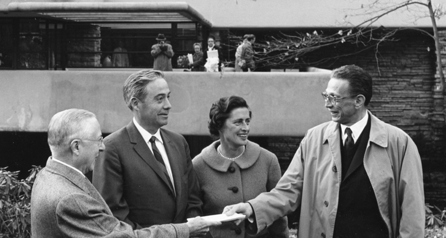

The Kaufmanns at Kaufmann Conservation on Bear Run.
Edgar J. Kaufmann Sr. was a Pittsburgh businessman and president of Kaufmann's Department Store. Liliane Kaufmann, like her husband, was an avid outdoorsman; she enjoyed both hiking and horseback riding. In addition, both Liliane and Edgar were devoted to the public. It was important to the couple that their new home would reflect these two things. Edgar and Liliane's only child, Edgar Kaufmann Jr., eventually became the catalyst for his father’s relationship with Frank Lloyd Wright. In the summer of 1934, Edgar Jr. read Frank Lloyd Wright’s An Autobiography (1932), and traveled to meet Wright at his home in Wisconsin in late September. Within three weeks, Edgar Jr. began an apprenticeship at the Taliesin Fellowship, a communal architecture program established in 1932 by Wright and his wife, Olgivanna. It was during a visit with Edgar Jr. at Taliesin in November 1934 that Edgar and Liliane Kaufmann first met Frank Lloyd Wright. The Kaufmanns lived in "La Tourelle", a French Norman estate in Fox Chapel designed in 1923 for Edgar J. Kaufmann by Pittsburgh architect Benno Janssen. However, the family also owned a remote property outside Pittsburgh — a small cabin near a waterfall — which was used as a summer retreat. When these cabins deteriorated, Mr. Kaufmann contacted Wright. On December 18, 1934, Wright visited Bear Run and asked for a survey of the area around the waterfall. One was prepared by Fayette Engineering Company of Uniontown, Pennsylvania, including all the site's boulders, trees, and topography, and forwarded to Wright in March 1935.
Fallingwater was the family's weekend home from 1937 until 1963, when Edgar Kaufmann Jr. donated the property to the Western Pennsylvania Conservancy. The family retreated at Fallingwater on weekends to escape the heat and smoke of industrial Pittsburgh. Liliane enjoyed swimming in the nude and collecting modern art, especially the works of Diego Rivera, who was a guest at the country house. Kaufmann Jr. said, "[Wright] understood that people were creatures of nature, hence an architecture which conformed to nature would conform to what was basic in people. For example, although all of Falling Water [sic] is opened by broad bands of windows, people inside are sheltered as in a deep cave, secure in the sense of the hill behind them."